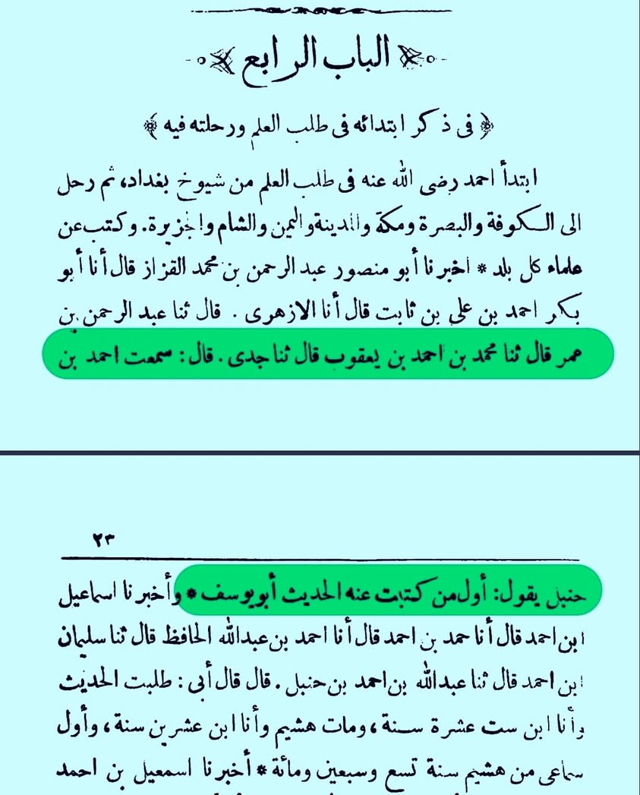

ইমাম আবু হানিফা রাহ. হাদিস জানতেন না কিন্তু তাঁর ছাত্ররা জানত— ব্যাপারটা কেমন…
২৫ মে, ২০২৪
ইমাম আবু হানিফা রাহ. হাদিস জানতেন না কিন্তু তাঁর ছাত্ররা জানত— ব্যাপারটা কেমন হাস্যকর ঠেকে না?
ইমাম আহমদ রাহ. বলেন—
أول من كتبتُ عنه الحديث أبو يوسف.
“আমি সর্বপ্রথম যার থেকে হাদিস লিখেছিলাম, তিনি হলেন আবু ইউসুফ।” [মানাকিবু ইমাম আহমদ, ইবনুল জাওযি— ২২-২৩]
আর এ আবু ইউসুফ রাহ. ছিলেন আবু হানিফার প্রধান শিষ্য। শিষ্য হাদিস জানত— যার থেকে ইমাম আহমদের মতো মানুষ হাদিস লিখেছেন— কিন্তু তাঁর গুরু হাদিস জানত না, এমন আপত্তি চরম হাস্যকর ও বাস্তবতা সম্পর্কে অজ্ঞতাও বটে। সালাফে সালেহিনের অন্তর্ভুক্ত একজন উল্লেখযোগ্য ইমামের ব্যাপারে এমন বি°দ্বে°ষ°পূর্ণ আচরণ চরম দুঃখজনক। আল্লাহ আমাদের সহিহ সমঝ দান করুন।
ইমাম আবু হানিফা রাহ. হাদিস জানতেন না কিন্তু তাঁর ছাত্ররা জানত— ব্যাপারটা কেমন হাস্যকর ঠেকে না?
ইমাম আহমদ রাহ. বলেন—
أول من كتبتُ عنه الحديث أبو يوسف.
“আমি সর্বপ্রথম যার থেকে হাদিস লিখেছিলাম, তিনি হলেন আবু ইউসুফ।” [মানাকিবু ইমাম আহমদ, ইবনুল জাওযি— ২২-২৩]
আর এ আবু ইউসুফ রাহ. ছিলেন আবু হানিফার প্রধান শিষ্য। শিষ্য হাদিস জানত— যার থেকে ইমাম আহমদের মতো মানুষ হাদিস লিখেছেন— কিন্তু তাঁর গুরু হাদিস জানত না, এমন আপত্তি চরম হাস্যকর ও বাস্তবতা সম্পর্কে অজ্ঞতাও বটে। সালাফে সালেহিনের অন্তর্ভুক্ত একজন উল্লেখযোগ্য ইমামের ব্যাপারে এমন বি°দ্বে°ষ°পূর্ণ আচরণ চরম দুঃখজনক। আল্লাহ আমাদের সহিহ সমঝ দান করুন।
